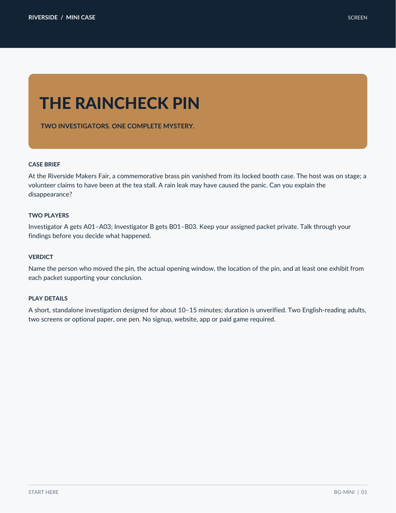

THE RAINCHECK
PIN
A commemorative pin disappears from a locked display case inside a fairground booth. One witness says they were buying tea. Two clocks tell different stories. Bring a partner, compare private evidence, and discover what actually happened.
Start playing on two screens — no ZIP needed
Two adults, two sets of private evidence. Open the instructions together. Then each person opens their own PDF on their own device; do not read each other's file. Talk through the clues, use a notes app or paper to record your conclusion, and agree on a verdict before opening the answer.
1 · Both players
Read Start Here (PDF) · Open this first
2 · Player A only
3 · Player B only
4 · Work together
Optional shared worksheet (PDF) · Write in Notes or on paper
Need a hint? Open only when you both agree
Finished or stopping? Answer and explanation — contains full spoilers
Decide on a verdict first. Open complete answer (PDF, spoilers). If you stopped early, your feedback is equally welcome.
Prefer offline or printed play? Download everything below; choose exactly one Screen / A4 / USLetter edition.
Download the complete free case · ZIPPrefer a deeper mystery? The separate Bellglass Interval early-access case is now available for $12. See the full two-investigator mystery and buyer details →. The Raincheck Pin is entirely free; purchasing is optional.
Free; no checkout, signup, tracking script or extra software. Approx. 1.05 MB. Design target 10–15 minutes, not yet validated with independent playtesters.

How two people play
- On two devices, use the separate Investigator A and B invitation pages above (no ZIP required). For offline or print play, download the ZIP once, read START_HERE.txt, and select just one edition: Screen, A4 or USLetter.
- Read 01_START_HERE.pdf together. Player A privately reads 02_INVESTIGATOR_A.pdf. Player B privately reads 03_INVESTIGATOR_B.pdf.
- Describe clues aloud and compare timestamps. Use 04_SHARED_WORKSHEET.pdf as prompts, but record your verdict on paper or in a basic Notes app (this worksheet has no fillable fields). Both investigators should contribute evidence.
- If stuck, open only 06_OPTIONAL_HINT_01.pdf. Agree on a verdict before opening the separate 99_ANSWER_KEY_OPEN_LAST.pdf.
Bring two screens or print the A/B packets, plus a pen. The full free case, optional hint, and separate answer are in the ZIP. No website is needed once downloaded. Other event times follow the fair master clock unless a device clock is explicitly named.
What we want to learn
Ease of starting
Could you begin using only the instructions? Were any steps unclear?
Both voices count
Did each investigator contribute a meaningful clue or did one person do everything?
Fair solution
Did the evidence support your verdict without guessing? Did you need the hint?
Real duration
How many minutes did you actually spend, and did you finish?
We are seeking initial feedback from three independent pairs of English-reading adults; more feedback is welcome. Did you complete or stop early? Both are valuable. Please report your device or print format, preparation and play times separately, your first sticking point, each player's contribution, and whether you used the optional hint.
Send private two-player feedback directly
No email app is needed. Fill out the optional form, consent to its third-party email delivery, and press Send. A success message appears only after the service confirms acceptance; email and copy alternatives remain available.
Send private feedback by email
Email: dlaepdfuf89+bellglass@gmail.com. No GitHub login required to email us. We tested receipt of an internal message; independent tester responses are not yet verified. Please avoid sending names or other personal details, and never reveal solutions publicly. If your device has no email app, copy the address into your webmail.
For public, spoiler-free technical issues only, you may also open a GitHub issue (GitHub login required).
The Bellglass Interval — full museum case now available
The Bellglass Interval is a separate, longer two-player detective mystery about a missing museum tide chart, conflicting records and a suspicious chain of custody. Each of two English-reading adult players receives a private evidence dossier; the full early-access package includes a separate answer and optional hints.
Price: US $12, one-time digital purchase. View the paid Bellglass case on Gumroad · $12
The paid Bellglass Interval v0.1.5 early-access edition is published on Gumroad. It is not the expanded v0.1.6 currently in private development. The package is AI-assisted; technical file checks have been performed, but independent blind testing with two adult customers, actual play duration, puzzle enjoyment and a completed third-party checkout/delivery have not been independently confirmed. This is a one-time-solution story with limited replay surprise. Please read the seller's description before paying. Taxes, where applicable, may be additional.
Want to help test the expanded future case? We are inviting independent pairs of English-reading adults to request a private, free developmental playtest. See the free two-adult playtester open call or request a private invitation directly. No payment or newsletter registration is required; an invitation is not guaranteed. The newer development case is not yet released for sale.
The Raincheck Pin remains completely free. Use the free two-screen links or ZIP above; purchasing the museum mystery is optional and is not needed for the free case.
Rights, safety & transparency
Fictional scenario. Free personal use and printing for the two players are permitted. Please do not redistribute, resell or repost the PDFs.
The story and layout were developed with generative-AI assistance and programmatic checks. Actual human enjoyment, duration and fairness remain under evaluation. Nothing here is a review, testimonial or sales claim.